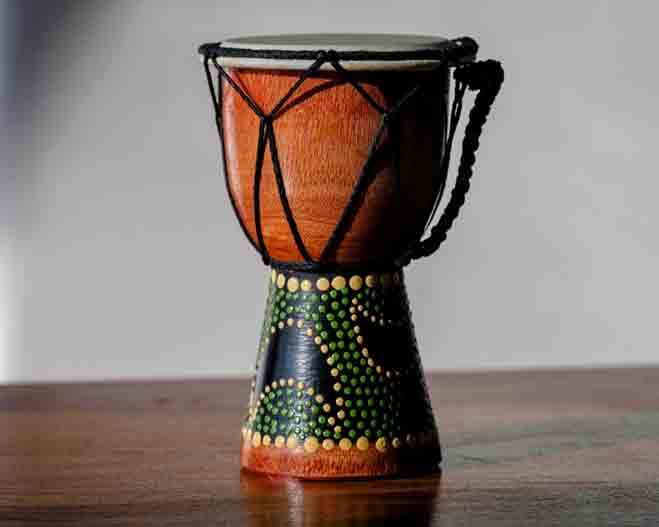

Audio Sampler
Experience the distinct sounds of traditional African instruments. This short audio mix gives you a taste of the balafon, djembe, and mbira.
Introductory Video
Watch this short video to learn about the cultural role of music and instruments in African traditions.
About Us
This site is dedicated to showcasing traditional African musical instruments, educating visitors about their origins, sounds, and cultural relevance. Whether you're a musician, student, or just curious, you're in the right place to explore the rich rhythm of Africa.
Learn MoreExplore Instruments
Discover a variety of traditional instruments like the djembe, kora, mbira, balafon, and more. Each instrument tells a story and plays a key role in African music and community life.
View Instruments